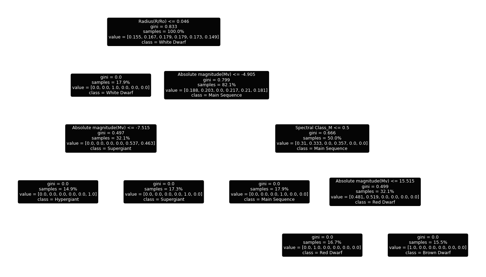
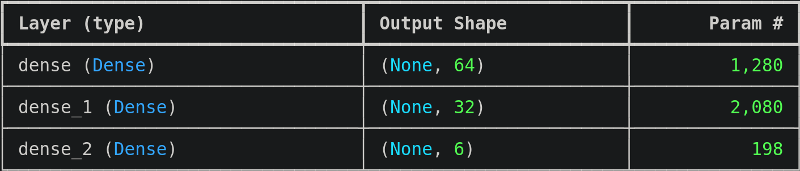

CSC 440 · Software Engineering · Spring 2026
A machine learning web application that classifies stars by their observable properties.
Jacob Canada · Alykaa Salaah · Idalia Martin · Elaina Hall
Project Overview
Astronomy is one of humanity's oldest pursuits. Yet terms like "main sequence," "white dwarf," and "red giant" remain opaque to most. This project bridges that gap as users are able to observe stellar parameters and receive a clear and explained classification.
We can observe or calculate their surface temperature, luminosity, radius, and absolute magnitude, and these are excellent parameters to use for classification. Machine learning has become a way for us to solve this classification task derived from such a feature set. We used two types of machine learning models: a decision tree and a multi-layer perceptron.
Team
Architecture
We train and evaluate two distinct machine learning architectures on the same cleaned dataset. Comparing them reveals which design choices produce the most accurate and generalizable stellar classification.
A supervised learning algorithm that models decisions and their possible consequences in a hierarchical, tree-like structure. It is similar to a flow-chart.

Consists of three layers—input, hidden layer, and output—of neurons, each with its own weights and activation function.

Classification
One way to classify stars is to look at their spectra—the different colors of light that they emit and absorb. This directly corellates to surface temperature and atmospheric composition. The symbols below represents the primary system used to classify stars in this way. This system is known as the Harvard spectral classification.
Foundation
The dataset is sourced, cleaned, and structured specifically for this classification task. Each record pairs observable stellar measurements with a verified stellar class label.
Input Features
temperatureluminosityradiusmagnitudespectral_classcolorstar_typeTry It
Enter the observable properties of a star and our model will predict its stellar classification.
Your classification result will appear here after submitting the form.
Contributors